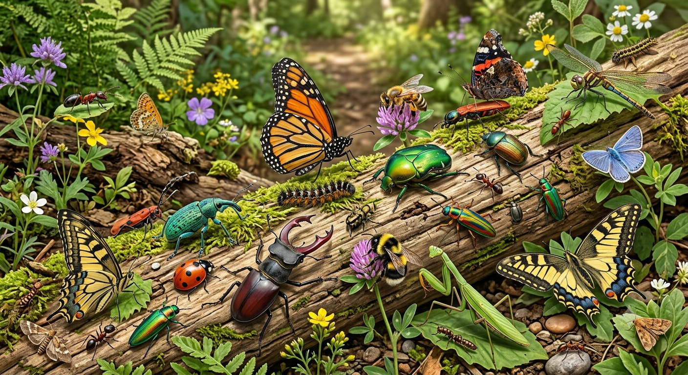

Meu primeiro post
Por: rychard lopes
Boas-vindas ao meu novo blog! Aqui vou compartilhar dados, fotos e histórias incríveis sobre o reino animal.
Aqui vou compartilhar novidades sobre o mundo animal.
Por: rychard lopes
Boas-vindas ao meu novo blog! Aqui vou compartilhar dados, fotos e histórias incríveis sobre o reino animal.
Por: rychard lopes
O reino animal é incrivelmente diverso, englobando desde organismos microscópicos até gigantes como a baleia-azul. Para entender melhor esse universo, os animais são divididos em duas grandes categorias principais:

Possuem espinha dorsal e crânio, dividindo-se em cinco grupos principais: